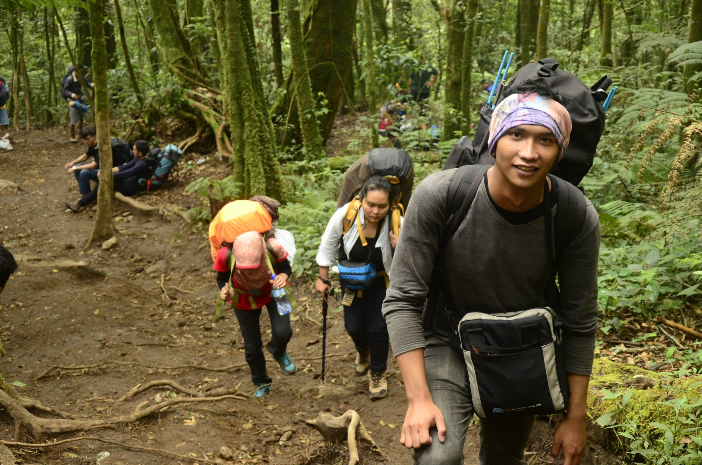
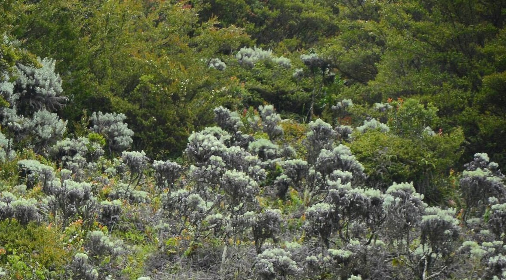
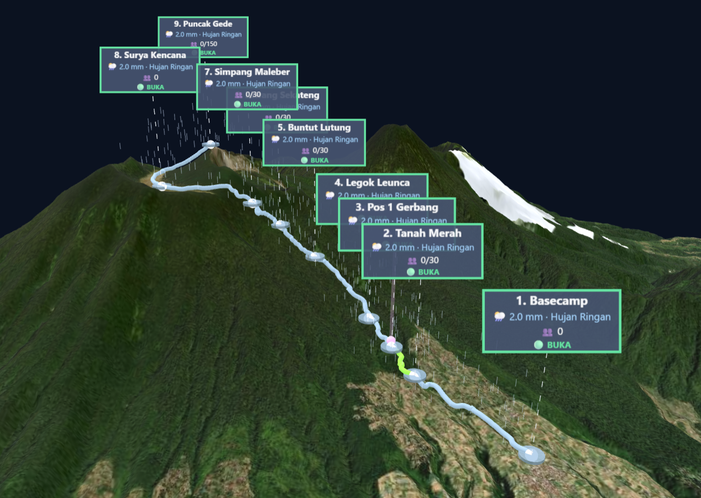
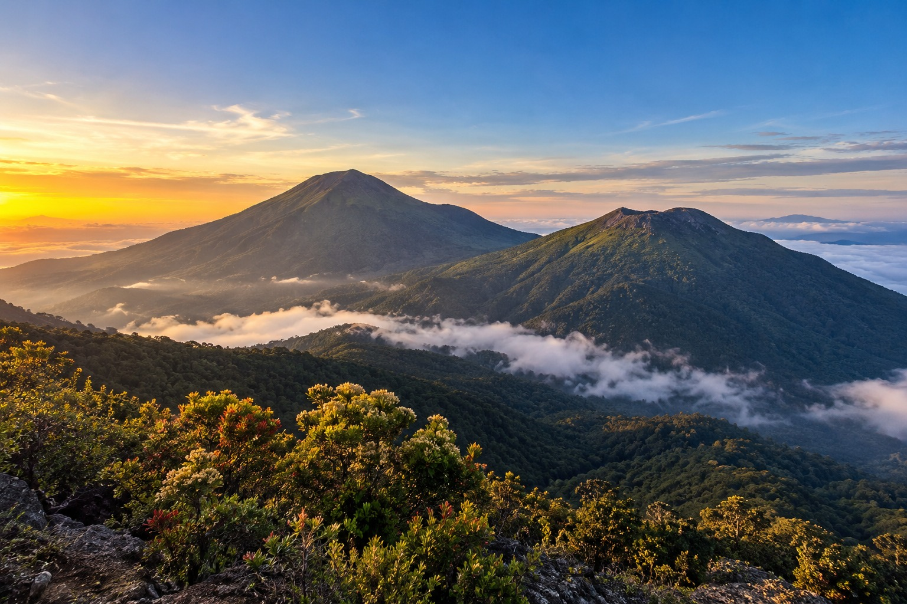

01 / REGISTRATIONPendaftaran pendakian
Registrasi Pendaki
Isi data pendaki individu maupun kelompok, identitas ketua dan anggota, serta tanggal rencana pendakian.
Buka Form Pendaftaran↗Platform Digital Twin Pendakian Gunung Gede Pangrango melalui Jalur Putri untuk menghubungkan pendaftaran pendaki, pemantauan operasional 2D, dan visualisasi spasial 3D dalam satu portal terintegrasi.
Satu portal untuk tiga kebutuhan utama. Pilih layanan sesuai peran dan kebutuhan Anda.

01 / REGISTRATIONIsi data pendaki individu maupun kelompok, identitas ketua dan anggota, serta tanggal rencana pendakian.
Buka Form Pendaftaran↗
02 / OPERATIONSPantau daftar pendaki, status perjalanan, kondisi pos, kepadatan, serta informasi dan peringatan operasional.
Buka Dashboard 2D↗
03 / SPATIAL TWINJelajahi representasi medan tiga dimensi untuk melihat posisi pendaki, persebaran aktivitas, kepadatan jalur, dan pos pendakian.
Buka Dashboard 3D↗Portal ini menjadi halaman penghubung antara proses registrasi pendaki dan dua pendekatan pemantauan. Dashboard 2D menyajikan informasi operasional secara ringkas, sedangkan dashboard 3D memberikan perspektif spasial terhadap jalur dan medan pendakian.
Gunakan menu navigasi pada setiap halaman untuk kembali ke Home atau berpindah antar-dashboard.
